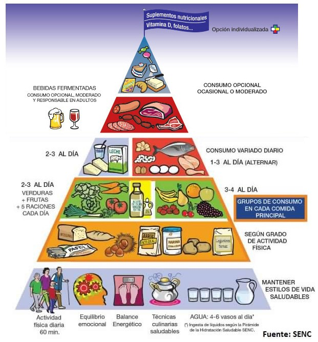
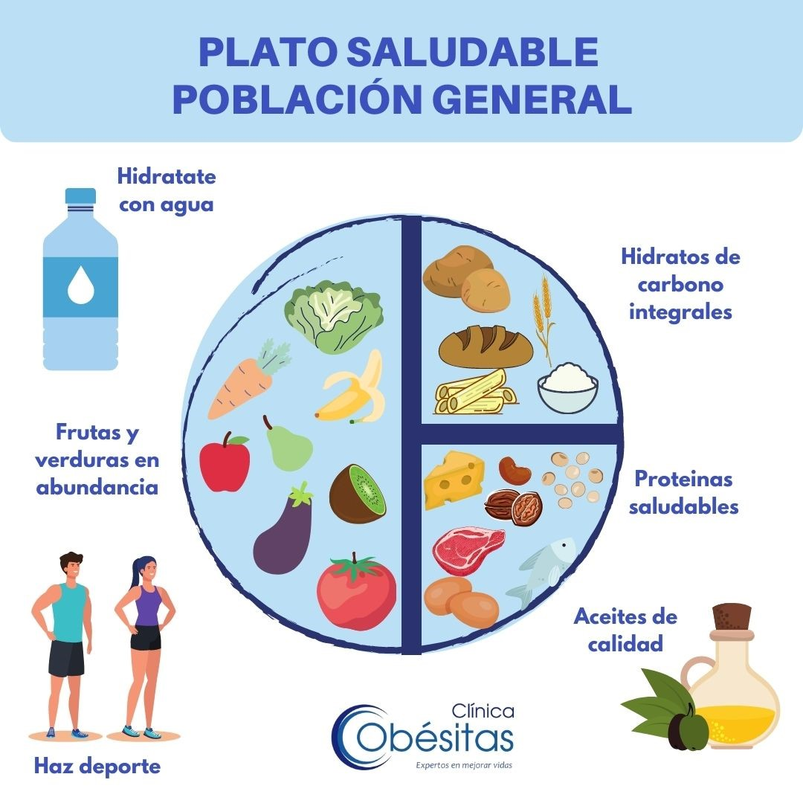

Alimentación saludable
Una alimentación saludable consiste en ingerir una variedad de
alimentos que te brinden los nutrientes que necesitas para
mantenerte sana, sentirte bien y tener energía. Estos
nutrientes incluyen las proteínas, los carbohidratos, las
grasas, el agua, las vitaminas y los minerales.

Cómo diseñar un plan de alimentación saludable
Para tener una dieta balanceada y saludable, debes consumir
una variedad de alimentos ricos en nutrientes.
-
llenar la mitad del plato con verduras y frutas
-
llenar un cuarto del plato con granos, la mitad de ellos
integrales
-
llenar un cuarto del plato con proteínas magras, sin
olvidarse de variar las fuentes de proteínas y de consumir
pescado dos veces por semana
-
reducir el consumo de alimentos con mucha azúcar, sal y
grasa agregada
Lo mejor es elegir los alimentos que tengan más nutrientes de
cada grupo de alimentos cada día, es decir, los que están
repletos de vitaminas, minerales, fibra y otros nutrientes, y
que tengan pocos carbohidratos refinados, como azúcar y harina
blanca. Elige alimentos como verduras, frutas, granos
integrales, y carne y pescado magros.

.jpeg)
.jpeg)

.jpeg)

.jpeg)
.jpeg)
.jpeg)